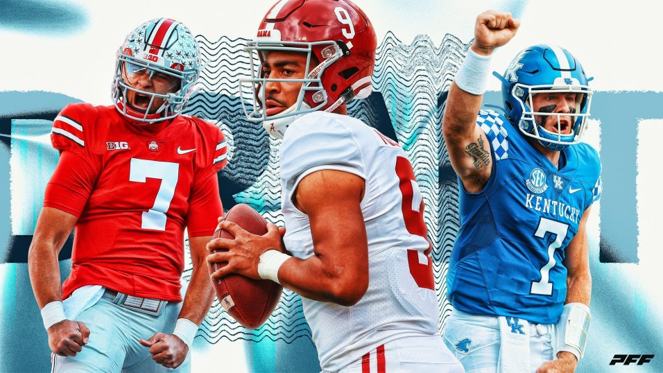

<!DOCTYPE html>
<html class="no-js" lang="en" dir="ltr">
  <head>
    <meta charset="utf-8" />
    <meta http-equiv="x-ua-compatible" content="ie=edge"/>
    <meta name="viewport" content="width=device-width, initial-scale=1.0"/>
    <title>10 wild 2023 NFL Draft predictions</title>
    <link rel="stylesheet" href="css/foundation.css"/>
    <link rel="stylesheet" href="css/app.css"/>
    <link rel="stylesheet" href="https://fonts.googleapis.com/css?family=Fjalla One"/>
    <link rel="stylesheet" href="https://fonts.googleapis.com/css?family=Anton"/>
    <link rel="stylesheet" href="https://fonts.googleapis.com/css?family=Barlow Condensed"/>
    <style>
      body{
        font-family: "Barlow Condensed";
        background-color: #f4f4f4;
      }
      h5{
        font-family: "Fjalla One";
      }
      h1{
        font-family: "Anton";
      }
      h4{
        font-family: "Barlow Condensed";
      }
    </style>
<!-- META TAGS -->
<meta name="description" content="With the 2023 NFL Draft soon approaching, here are 10 bold predictions.">
<meta name="author" content="Jeff Risdon">

<!--TWITTER SUMMARY CARD-->
<meta name="twitter:card" content="NFL Draft.jpeg">
<meta name="twitter:title" content="NFL Draft">

<!--OPEN GRAPH CARD-->
<meta property="og:title" content="NFL Draft">
<meta property="og:site_name" content="USA today">
<meta property="og:url" content="file:///Users/bschwartzberg/Desktop/UMD/Spring%202023/JOUR352/Midterm/index.html">
<meta property="og:description" content="The upcoming NFL Draft is soon approaching. Listed are 10 bold predictions on what will happen in April's draft.">
<meta property="og:type" content="website">
<meta property="og:image" content="NFL Draft.jpeg">

</head>
</html>

<!-- BODY -->
<body>
  <div class="grid-container">
    <div class="grid-x grid-padding-x">
      <div class="large-12 cell">
        <h1>10 wild 2023 NFL Draft predictions</h1>
        <h4>
          The upcoming NFL Draft is soon approaching. The following are 10 bold
          predictions on what will happen in April's draft.
        </h4>
      </div>
      <div class="large-12 cell">
        <a href="https://draftwire.usatoday.com/lists/2023-nfl-draft-10-bold-predictions-trades-draft-projections/" target="_blank">
          Original story written March 27 by Jeff Risdon</a>
      </div>

      <div class="large-8 medium-8 small-12 cell">
        <p>
          We are exactly one month away from the start of the 2023 NFL draft in
          Kansas City. What exactly is going to happen on April 27th-29th in the
          draft? Those are mysteries, of course. We'll find out in due time, but
          that won't stop the speculation. In that spirit, here are 10 quick,
          bold predictions on what will happen next month in the draft.
        </p>
        <h5><strong> No. 3 pick will be traded</strong></h5>
        <p>
            The Arizona Cardinals are currently slated to make the No. 3 pick.
          They will not, however, make the pick at No. 3. Arizona will trade the
          pick to a team looking to snag the best remaining quarterback on the
          board. The Cardinals will get a first-round pick this year, along with
          a Day 2 pick and a player who can start right away in return.
        </p> 
          <h5><strong>5 QBs in the first round, and then a massive gap</strong></h5> 
          <!-- QB IMAGE BELOW HEADLINE -->
          <figure>
            
            <figcaption>Image courtesy of Pro Football Focus</figcaption>
        </figure>
        <br>
          <p>
            There will be five quarterbacks taken in the first round. 
            <ul>
                <li>C.J. Stroud</li>
                <li>Bryce Young</li>
                <li>Anthony Richardson</li>
                <li>Will Levis</li>
                <li>Hendon Hooker</li>
            </ul>
            After Hooker comes off the board,
          somewhere between 18 and 26 overall, there won't be another QB
          selected until the compensatory pick range of the third round.
        </p> 
          <h5><strong>Tyree Wilson goes ahead of Will Anderson</strong></h5>
        <p>
          Much like a year ago when Travon
          Walker was selected No. 1 overall over more accomplished talents like
          Aidan Hutchinson and Kayvon Thibodeaux, Texas Tech EDGE Tyree Wilson
          will be drafted before Alabama's Will Anderson. Wilson's superior size
          and athletic traits will coax a higher pick than Anderson's superior
          on-field production in college.
        </p> 
          <h5><strong>Seattle won't make a pick in the 2nd round</strong></h5>
        <p>
          Right now, the Seattle Seahawks have four picks in the first 52
          selections. Thanks to trades, the Seahawks are slated to pick at 5,
          20, 37 and 52. The Seahawks will package 37 and 52 and jump into the
          back end of the first round to select Georgia TE Darnell Washington.
        </p>
          <h5><strong>Only 1 first-round wide receiver</strong></h5>
        <p>
          The general consensus amongst draft analysts is that it's not a high-end wide receiver class.
          That opinion will be validated when just one wideout comes off the board on the draft's first night. 
          Ohio State's Jaxon Smith-Njigba will be the only first-round wide receiver.
          <!-- QUOTE BELOW WR SECTION -->
        <div class="large-4 medium-4 small-12 cell">
        <div class="callout" style="background-color: white;">
            <h5>"Ohio State's Jaxon Smith-Njigba will be the only first-round wide receiver" - Jeff Risdon</h5>
        </div>
        </div>
        </p> 
          <h5><strong>Bijan Robinson will go in the top 10</strong></h5>
          <!-- BIJAN IMAGE BELOW HEADLINE -->
          <figure>
            
            <figcaption>Image courtesy of Tim Warner/Getty Images</figcaption>
        </figure>
        <br>
        <p>Bijan Robinson is a very difficult player to forecast in terms of draft
          slotting. The Texas running back is almost universally regarded as one
          of the five highest-rated players in the draft, but selecting a
          running back with such a lofty draft position has become as out of
          fashion as white parachute pants. Someone will bring back the running
          back into the top 10. Robinson is that good.
        </p> 
          <h5><strong>The 49ers bail on comp picks</strong></h5> 
        <p>San Francisco earned three compensatory draft picks, No. 99, 101
          and 102. Much to the relief of everyone who covers the 49ers, GM John
          Lynch will package all three of those picks in various trades and not
          make a single selection at the end of the third round.
        </p> 
          <h5><strong>Two former first-round picks will be traded on draft weekend</strong></h5> 
        <p>Two recent first-round picks will find new homes during the draft weekend. The
          Lions will move on from 2020 No. 3 overall pick Jeff Okudah. The oft-
          injured cornerback will be part of a larger deal. The same is true of
          Jaguars' first-rounder from 2020, EDGE K'Lavon Chaisson. He was the
          No. 20 pick in that draft. Neither player has been bad, but their time
          to prove themselves with their original team comes to an end.
        </p> 
          <h5><strong>4 kickers will hear their names called</strong></h5> 
    <p>Drafting a kicker is not something most fanbases clamor for, and NFL teams are pretty strong in
          not poking that bear. Only one kicker has been selected in each of the
          last two drafts. There haven't been more than three kickers selected
          in any year since 2012. That changes in 2023. Four kickers will be
          drafted, all in the final two rounds: 
        <ul>
            <li>Andre Szmyt, Syracuse</li>
            <li>Jake Moody, Michigan</li>
            <li>B.T. Potter, Clemson</li>
            <li>Anders Carlson, Auburn</li>
        </ul>
    </p> 
          <h5><strong>Two big names who fall in the draft</strong></h5> 
          <p>
            Two players who have been mainstays in the
          first round of mock drafts for months will not be selected in the top
          31 (remember—Miami forfeited its first-rounder). Clemson DT Bryan
          Bresee and Notre Dame TE Michael Mayer will each fall out of the first
          round. For Bresee, the wait could be a much longer one than
          anticipated.
        </p>
      </div>
<!-- SIDEBAR -->
      <div class="large-4 medium-4 small-12 cell">
        <div class="callout" style="background-color: white;">
            <h5><strong>2023 NFL Draft Information</strong></h5>
            <ul>
                <li><strong>Location:</strong> Kansas City, Missouri</li>
                <li><strong>Date:</strong> April 27 (8 p.m.) - April 29</li>
                <li><strong>Networks:</strong> ABC, ESPN, NFL Network</li>
            </ul>
        </div>
        <br>
        <br>
        <div class="callout" style="background-color: white;">
            <h5><strong>2023 NFL Draft Order</strong></h5>
            <ol>
                <li>Carolina Panthers (via Chicago Bears)</li>
                <li>Houston Texans</li>
                <li>Arizona Cardinals</li>
                <li>Indianapolis Colts</li>
                <li>Seattle Seahawks (via Denver Broncos)</li>
                <li>Detroit Lions (via Los Angeles Rams)</li>
                <li>Las Vegas Raiders</li>
                <li>Atlanta Falcons</li>
                <li>Chicago Bears (via Carolina Panthers)</li>
                <li>Philadelphia Eagles (via New Orleans Saints)</li>
                <li>Tennessee Titans</li>
                <li>Houston Texas (via Cleveland Browns)</li>
                <li>New York Jets</li>
                <li>New England Patriots</li>
                <li>Green Bay Packers</li>
                <li>Washington Commanders</li>
                <li>Pittsburgh Steelers</li>
                <li>Detroit Lions</li>
                <li>Tampa Bay Buccaneers</li>
                <li>Seattle Seahawks</li>
                <li>Los Angeles Chargers</li>
                <li>Baltimore Ravens</li>
                <li>Minnesota Vikings</li>
                <li>Jacksonville Jaguars</li>
                <li>New York Giants</li>
                <li>Dallas Cowboys</li>
                <li>Buffalo Bills</li>
                <li>Cincinnati Bengals</li>
                <li>New Orleans Saints (via Philadelphia Eagles)</li>
                <li>Philadelphia Eagles</li>
                <li>Kansas City Chiefs</li>
            </ol>
        </div>
        <br>
        <br>
        <div class="callout" style="background-color: white;">
            <h5><strong>Top Draft Prospects</strong></h5>
            <ul>
                <li><strong>Bryce Young</strong> QB, Alabama</li>
                <li><strong>Jalen Carter</strong> DL, Georgia</li>
                <li><strong>Will Anderson Jr.</strong> Edge, Alabama</li>
                <li><strong>CJ Stroud</strong> QB, Ohio State</li>
                <li><strong>Anthony Richardson</strong> QB, Florida</li>
                <li><strong>Will Levis</strong> QB, Kentucky</li>
                <li><strong>Devon Witherspoon</strong> CB, Illinois</li>
                <li><strong>Peter Skoronski</strong> OT, Northwestern</li>
                <li><strong>Tyree Wilson</strong> Edge, Texas Tech</li>
                <li><strong>Quentin Johnston</strong> WR, TCU</li>
                <li><strong>Christian Gonzalez</strong> CB, Oregon</li>
                <li><strong>Jackson Smith-Njigba</strong> WR, Ohio State</li>
                <li><strong>Nolan Smith</strong> Edge, Georgia</li>
                <li><strong>Lukas Van Ness</strong> Edge, Iowa</li>
                <li><strong>Myles Murphy</strong> DL, Clemson</li>
                <li><strong>Paris Johnson</strong> OT, Ohio State</li>
                <li><strong>Michael Mayer</strong> TE, Notre Dame</li>
                <li><strong>Joey Porter Jr.</strong> CB, Penn State</li>
                <li><strong>Broderick Jones</strong> OT, Georgia</li>
                <li><strong>Deonte Banks</strong> CB, Maryland</li>
                <li><strong>Bijan Robinson</strong> RB, Texas</li>
                <li><strong>Hendon Hooker</strong> QB, Tennessee</li>
                <li><strong>Calijah Kancey</strong> DL, Pittsburgh</li>
                <li><strong>Dalton Kincaid</strong> TE, Utah</li>
                <li><strong>Bryan Bresee</strong> DL, Clemson</li>
                <li><strong>Brian Branch</strong> S, Alabama</li>
                <li><strong>Darnell Wright</strong> OT, Tennessee</li>
                <li><strong>Zay Flowers</strong> WR, Boston College</li>
                <li><strong>Will Mcdonald IV</strong> Edge, Iowa State</li>
                <li><strong>Anton Harrison</strong> OT, Oklahoma</li>
            </ul>
        </div>
      </div>

      </div>
    </div>
</body>
